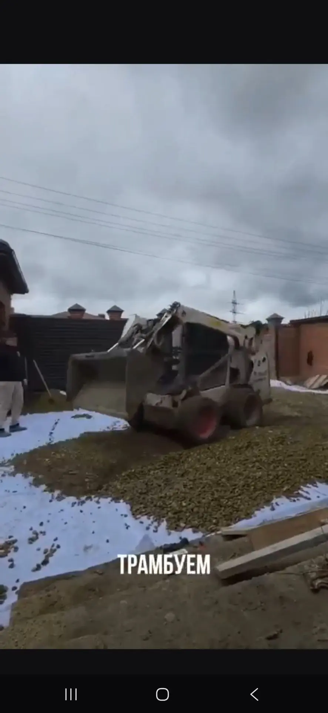
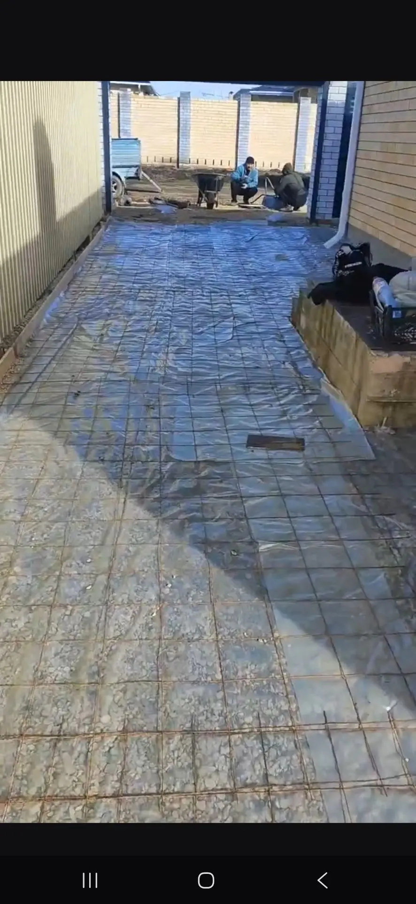
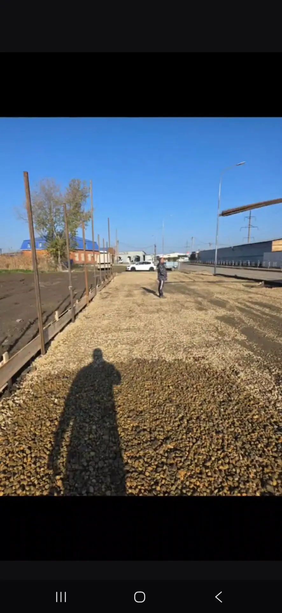

Осмотр и отметки
Замеряем участок, оцениваем грунт, перепады и направление отвода воды.
Устройство бетонного покрытия во дворе и на площадках. Решение подбираем по условиям участка и назначению будущей поверхности.
Бетонное покрытие устраиваем для дворов, парковок, проездов и хозяйственных площадок. Перед работами определяем отметки, будущую нагрузку и способ отвода воды — от этого зависят основание, армирование и толщина покрытия.
Толщину основания, армирование и марку бетона определяем с учётом грунта и нагрузки на площадку.
Замеряем участок, оцениваем грунт, перепады и направление отвода воды.
Выполняем выемку грунта, устраиваем и послойно уплотняем основание под будущую нагрузку.
Формируем границы площадки, предусматриваем уклоны и собираем согласованное армирование.
Укладываем бетон, выравниваем поверхность и контролируем качество готового покрытия.
Мы не заливаем бетон «на глаз». Толщина плиты и армирование зависят от того, как вы будете использовать площадку.
Идеально для садовых дорожек, зон отдыха и отмостки вокруг дома.Подготавливаем уплотнённое основание и заливаем бетон толщиной 10 см с лёгким армированием. Отмостку делаем с правильным уклоном — это надёжно защищает фундамент вашего дома от дождевых и талых вод.

Классическое решение для въезда и двора.Устраиваем усиленную «подушку» из песка и щебня, вяжем арматурный каркас и заливаем бетон толщиной 10–15 см. Поверхность легко выдержит ежедневные заезды легковой машины, не треснет после зимы и не просядет.

Для площадок с максимальной нагрузкой (грузовики, спецтехника).Устраиваем основательное глубокое корыто, мощный каркас из арматуры и заливаем бетон толщиной 15–20 см, используя бетон повышенной марки. Эта монолитная плита выдержит вес тяжёлых машин.

Одинаковых участков не бывает, поэтому рассчитываем работу после осмотра и замеров.
На объём работ влияют демонтаж, выемка грунта, перепады и доступ техники.
Пешеходная зона, двор и парковка требуют разной толщины основания и бетона.
Учитываем выбранное армирование, форму площадки, опалубку и сложные примыкания.
Предусматриваем уклоны, лотки и точки сбора воды, если они необходимы на участке.
Подготовим понятную смету. После осмотра согласуем состав работ и материалы, затем зафиксируем стоимость в смете и договоре.
Получить расчётСоседние работы можно обсудить вместе с основной задачей.